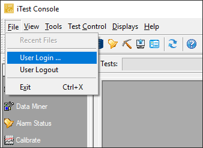

System Messages
If a user tries to perform a task they are restricted from, a warning dialog displays indicating that they do not have permission to perform the action:
No Permission

iTest contains a security subsystem that allows the test cell manager to restrict access to various components and functionality within iTest. For large-scale systems, most security settings should be managed centrally from LabCentral. However, all security settings can be managed locally at each iTest machine.
iTest security is based on groups and users. Permissions and restrictions are applied to groups, and then users are added to those groups. Users can be restricted in iTest in three different ways: by application, by task, and by items in Test Manager. You can configure these restrictions locally by using the Security Editor (SecurityEditor.exe) tool. This tool can be launched from the $EXECUTEDIR.
This document details how to manage security in iTest as well as other advanced topics. For information regarding how to manage security in LabCentral, refer to the Administering System Security document in the LabCentral Administration Guide.
You can limit access to tasks and applications in iTest to specific user groups. The security system consists of the following components.
Security Component Descriptions
| Component | Description |
| Security Editor | The Security Editor allows you to create groups, assign permissions to groups, and then add users to the groups. These permissions limit access to applications and iTest tasks. |
| Database | The security database includes virtual string channels that contain the name of the current user and its group. For the security system to work, it assumes that the Windows or iTest processes are accessed using the main iTest tools (e.g., AutomationPanel, Test Manager, etc.). It also assumes that the channel that holds the name of the logged-in user is UserName and the channel that holds the name of the group is GroupName. If iTest is not running, or if the UserName/GroupName channels do not exist in the database, the security system will not operate properly. |
| User Security Information | User security information is contained in the users.dat file. This is an encrypted file located in the path defined by the USERDATABASEPATH powertek.ini setting. If iTest detects a UserName channel on startup, but the users.dat file does not exist, a restricted default user file is created. This prevents bypassing security by deleting the database file.For more information about the user.dat file, refer to the users.dat File section below. |
If you do not want to use the security system, do not include the UserName channel in the database. To prevent an unauthorized user from deleting the UserName field from the channel definitions, restrict access to the Channel Definitions database as well as access to any text editors.
iTest checks the current UserName against the security table when a task or application is selected. If the current user is not a member of a group that has permission to access an application or task, the user receives a security violation message and is unable to launch the task or application. If the UserName channel is configured when the system starts, the UserName channel is set to Operator by default. Operator permissions can then be set by the site administrator in the Security Editor.
There are certain requirements for enabling iTest security without LabCentral or for legacy VX-In customers. To enable iTest security, you must make the following manual file edits.
The following .ini settings are used to configure iTest security:
Security INI Settings
| Setting | Location | Description |
| DefaultUser | Powertek.ini | This setting allows you to change the name of the default user that is logged in when iTest starts. If this setting is an empty string (i.e., DefaultUser=), then a login prompt will be presented at startup if iTestLogin=TRUE. By default, this setting is set to Operator. If this setting is defined with any user (such as Administrator) or is missing, then the login prompt will be bypassed.This setting should be added/configured to each solution that user restrictions are required. This setting is also configurable in the Global Settings editor in Test Manager. |
| iTestLogin | Config.ini | This setting will enable login security for iTest. If iTestLogin=TRUE, then the user is prompted to enter a username and password. If a default user is set and iTestLogin=TRUE, then the login prompt at start-up will not appear. Test Manager uses the security credentials of the logged in user from AutomationPanel or iTest Console, instead of requiring an additional login, if either of these programs are already running when Test Manager is started. |
| iTestLoginComboBox | Config.ini | This setting enables a combo box containing a list of usernames from the users.dat file for the AutomationPanel and SolutionBuilder login dialog. By default, this setting is set to FALSE. |
| PasswordFailedLoginDisable | Config.ini | The number of login failures before the user is disabled. Entering the correct user credentials prior to the user being disabled will reset the number of login failures back to 0. To disable this setting, enter a value <= 0. By default, this value is set to -1. |
| PasswordMinimumLength | Config.ini | When set, setting a user password in the Security Editor will require the password to contain at least this many characters. To disable this setting, enter -1. |
| PasswordSpecialCharacterRequired | Config.ini | When set to TRUE, setting a user password in the Security Editor will require the password to contain at least one special character. Special characters include:
!#$%&'()*+,-./:;<=>?@[\]^_`{|}~
|
| SecurityLogExtraLogging | Config.ini | When set to TRUE, changes made to Users or Groups using the Security Editor are logged to the SecurityShell.log file. |
| SingleUserLogin | Config.ini | Allows iTest Console, AutomationPanel, and SolutionBuilder to share the same user login with Test Manager, reducing the number of login prompts. When set to TRUE, Test Manager and/or SolutionBuilder must be closed before the user is able to log in/out or switch users using the File > User Login…/User Logout options or the $LOGINREQUEST/$LOGOUTREQUEST Softpanel mailslot messages. |
| UserExpirationDays | Config.ini | The number of days until a newly created user's password expires. Editing an existing user will reset the timer until the password expires. For example, if this setting is set to 30, and a modification is made to the user prior to 30 days passing, then the password will expire 30 days after the modification was saved. Once the password has expired, the user will be prompted to change their password on their next login attempt. To disable this setting, enter a value <= 0. By default, this value is set to -1. |
To successfully use iTest security, you must add the following iTest channels (if not already provided) to a channel definitions database. Verify that the value in the Initial String column is blank unless you want a default username to appear in the login prompt.
UserName: A virtual string channel that contains the name of the logged-in user. GroupName: A virtual string channel that contains the name of the group(s) the user belongs to. If the user belongs to multiple groups due to the use of LabCentral security, this information will be stored as a comma-delimited list in this channel. Channels - Test Manager
Channels - SolutionBuilder
After iTest security is enabled, you can use the Security Editor to modify users and groups. When you launch this editor, users are located at the top of the editor and groups are located at the bottom section. Restrictions are associated with groups. Because a user is part of a group, the user will only have access to the permissions granted to the group.
To access the Security Editor, launch SecurityEditor.exe from the $EXECUTEDIR. You will be required to enter a password to launch the application.
System Security Editor
By default, iTest includes the following groups: Administrator, Engineers, and Operators. Users that belong to the Administrator group are able to edit users and groups in the Security Editor as detailed in the sections above. Administrators can create a "Restricted Administrator" group by adding the Restricted Administrator permission in the Group editor. This permission allows for users in this group to access the Security Editor and edit users (excluding Administrators) as needed.
Restricted Administrator
To add a new group, do the following:
| Section | Description |
| Group Name | The name for the new Group. |
| Description | A description for the Group. |
| Application Permissions | This section is used to define which applications the users of the group can launch. By default, a group cannot launch any applications unless they are granted permission in this section. There is an option to add all applications to the list. |
| Other Tasks | This section is used to define which tasks users of the group can perform. By default, users of a group cannot perform any task unless they are granted permission in this section. There is an option to add all tasks to the list. |
| Test Manager Security | This section is used to specify which tree nodes in Test Manager the user is restricted from accessing. By default, all items in Test Manager are editable unless they are added to the list. |
Once a group has been configured, you can create and add users to the group. The following steps describe the process of adding new users and assigning them to groups. When you assign a user to a group, they are limited by the permissions established in the group settings.
User Configuration Settings
| Setting | Description |
| User Name | The name for the new user. Space characters are not permitted. |
| Group | Select the group the user belongs to. |
| User Description | The description of the user. |
| Password/Confirm Password | The password for the user. Confirm the password by re-entering it in the Confirm Password field. |
When you launch iTest Console or AutomationPanel, the logged-in user is typically Operator unless this setting has been overridden. You can force the login prompt to display when iTest starts by setting the DefaultUser powertek.ini setting to an empty string. Otherwise, no login prompt will display and the user will initialize to the default user account (either Operator or the defined DefaultUser).
When iTest loads, you can switch to another user and increase or decrease your permissions by using the User Login option located in the File menu option.
AutomationPanel User Login
iTestConsole User Login

Once you have logged in, you can log out at any time by selecting File > User Logout from the main menu. This changes the logged-in user to NoUser. This user has limited permissions in iTest, and you must log in again before making changes to the system.
When an operator attempts to launch an application that they do not have permissions for, a message appears in the message queue indicating that they do not have adequate permissions. These interfaces will vary in appearance depending on whether you are running iTest Console or AutomationPanel.
System Messages
If a user tries to perform a task they are restricted from, a warning dialog displays indicating that they do not have permission to perform the action:
No Permission
If you start Test Manager while iTest is running, the user currently logged into iTest remains the same. If you start Test Manager when iTest is not running, you will be prompted to enter a user name and password. The current user's permissions determine which items in the Test Manager tree are enabled or disabled. If the user is restricted from an area in Test Manager, it will be grayed out in the tree. For example, the following image displays that the user is restricted from the Channels, Calculations, and Test Development areas:
Restricted Folders
When launching SolutionBuilder, the user may be prompted to log in. The login prompt is displayed depending on the following .ini settings:
iTestLogin=SingleUserLogin=DefaultUser=For more information on the listed settings, refer to the Configure INI Settings section above.
If a user is restricted from a feature in SolutionBuilder, then a dialog will display, stating that the user lacks the necessary permissions. The image below demonstrates a user who is restricted from the Layouts editor in SolutionBuilder.
Restricted Permissions Dialog
When security is enabled (i.e., iTestLogin=TRUE), SolutionBuilder will display the logged in user in its title bar as well as provide a Lock icon. Clicking the Lock icon will prevent any further edits from being made in SolutionBuilder, and the SolutionBuilder Locked dialog will display. The specified user must re-enter their password in order to unlock SolutionBuilder and continue making any necessary edits.
Security Enabled - SolutionBuilder
SolutionBuilder Locked Dialog
The System Log contains all security events that have occurred since iTest first started. For example, user login successes and failures are recorded in the system log. You can view this file by launching ViewSysLog.exe from the $EXECUTEDIR. This file can be used to audit and track logins/logouts to iTest.
View System Log
AutomationPanel and SolutionBuilder allow the user to change their password via the Change Password dialog. This dialog can be accessed through the login prompt's Change Password button when launching AutomationPanel or SolutionBuilder as well as AutomationPanel's File > User Login... menu option.
 |
WARNING: | If the iTest system is connected to a LabCentral server, then user settings will be pushed down from LabCentral. This will override any changes made to a user's password via the Change Password dialog. |
If a user's password has expired due to the duration specified in the UserExpirationDays setting passing, then the Change Password dialog will automatically display when the expired user attempts to log into AutomationPanel or SolutionBuilder.
 |
NOTE: | The Change Password button is only visible in the login prompt when UseWindowsSecurity=FALSE. |
Change Password Button: Example from AutomationPanel
After clicking the Change Password button, the Change Password dialog displays. Use the descriptions provided in the table below to configure the new password. Once finished, click OK to change the password; the user can then use the new password when logging in. Click Cancel to abandon changes.
Change Password Dialog: Example from AutomationPanel
Field Descriptions
| Field | Description |
| Username | (Read-only) The name of an existing user whose password is being changed. This field is automatically populated from the Username field in the login prompt. |
| Old Password | The user's old password. |
| New Password | The new password for the user. The new password must adhere to any requirements specified in the config.ini file. For example, if the PasswordMinimumLength=5 is set in the config.ini file, then the new password must contain at least five characters. |
| Confirm Password | Confirmation of the new password. This field must match the value entered in the New Password field. |
A solution's test and calculation files can be encrypted/decrypted using the command-line arguments listed below. The last solution opened in iTest, or as specified by the $SupportDir= config.ini setting, will determine which solution's files are affected.
|
NOTE: | iTest must be closed before you can encrypt/decrypt files. |
Encrypting Files:
TestMgr.exe EncryptTestFiles
Decrypting Files:
TestMgr.exe DecryptTestFiles
The System Log can be encrypted using the SysLogEncrypted=TRUE setting in the powertek.ini file. Encrypted system log messages are still viewable using the available iTest tools, e.g., Message Panel or ViewSysLog.exe.
|
NOTE: | There is no way to encrypt or unencrypt an existing file. If portions of a SystemLog.slg file are not encrypted then those portions will not be viewable when encryption is turned on and vice versa. |
Security group configurations can be hidden in the Security Editor via the following command-line argument:
SecurityEditor.exe /h
Running this command-line argument will cause the Groups section to be hidden in the Security Editor as well as the menu options for managing security groups.
Hiding Group Configurations
When defining security with LabCentral, you can choose to apply user authentication through your Windows domain servers instead of using the local iTest user database. This can also be enabled without LabCentral by editing the Config.ini file and adding two entries. The first is to enable Windows domain security and should be set as:
UseWindowsSecurity=TRUE
The second defines the domain which will be used to authenticate users and is specified as:
Domain=<DomainName>
Where <DomainName> is the name of the domain to use.
Using domain security changes how iTest authenticates users. When a user logs into iTest or Test Manager, the user is checked to see if the name and password entered are a valid domain username and password. If these are valid, then the groups that that user belongs to are checked against the groups in the iTest security database (users.dat). The permissions granted to that user are a union of the permissions of all domain groups that they belong to.
The users.dat file contains the security database that includes the list of users and groups. This is an encrypted file that is not usable except through one of the A&D editors—either Security Editor or LabCentral. If your iTest system is connected to LabCentral, this file is automatically pushed down to the iTest system when it is changed from LabCentral. The default location for this file is in the $SYSTEMDIR/Installation folder.